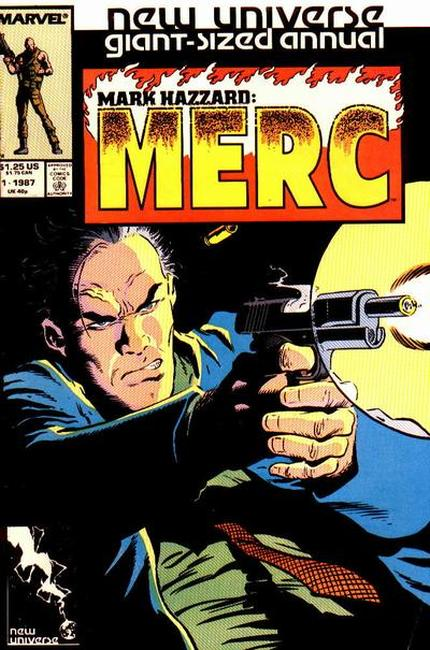

"Bad for Business!" It's a world not unlike our own. Words like paranormal or super-hero are euphemisms only used in comic books and movies. That was until the White Event! In one blinding moment the landscape of the universe changed. Welcome to the New Universe. In a world that has been turned upside down, one man is determined to see to business as usual. Meet Marc Hazzard, professional mercenary. The only problem is it's hard to be a cold-blooded gun for hire when you have something to lose.

Cover by Mike Zeck
"A Matter of Lives and Death!" Story continued from Mark Hazzard (1986) #11. As Hazzard fights for his life on the operating table, Afghan freedom fighters prepare for the final battle with their Russian oppressors. Plus, learn the origins of Mark's friends and associates and how he has influenced their lives. Story concludes in Mark Hazzard: Merc (1986) #12.